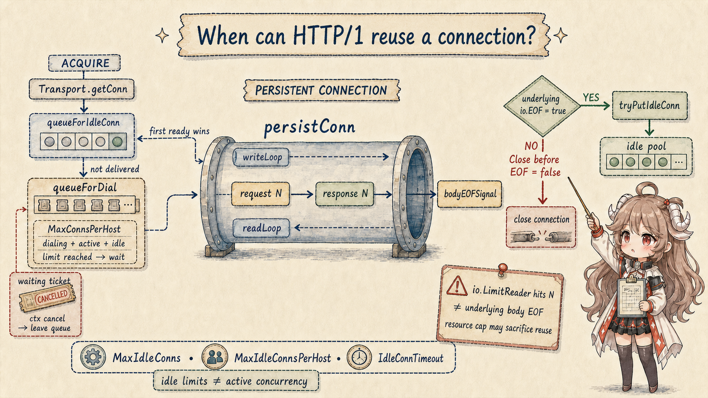
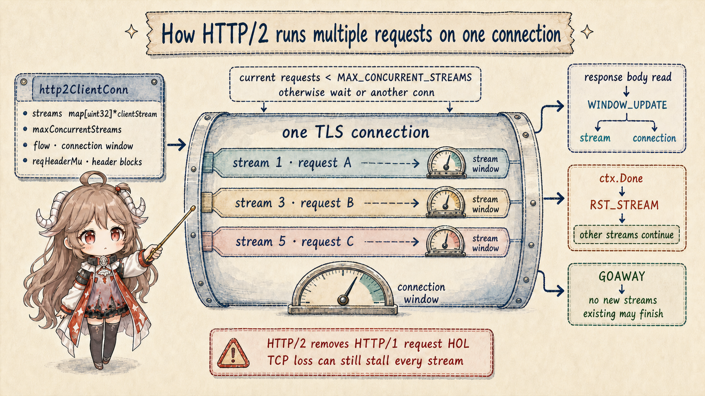
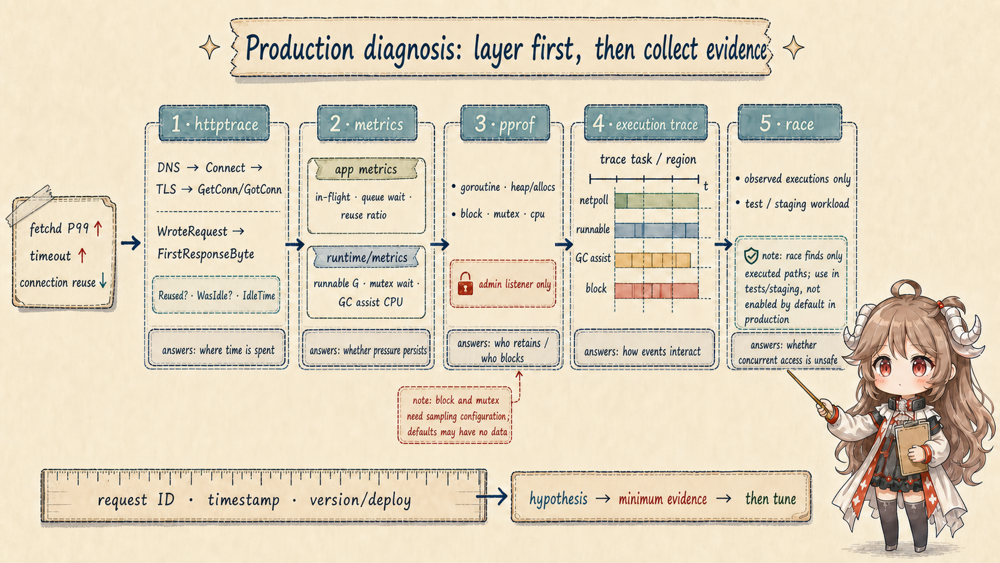

Reading contract: this chapter pins implementation claims to Go 1.26.0 and covers the standard Transport HTTP/1.1 path plus HTTP/2 over HTTPS. HTTP/3, proxy-specific protocols, and custom RoundTrippers are outside the scope. Internal queues, persistConn fields, and bundled HTTP/2 layout can change; public configuration and Response.Body contracts are application boundaries.
Source evidence comes from the Go 1.26.0 tag: net/http/transport.go, h2_bundle.go, and httptrace/trace.go. Diagnostic contracts come from httptrace, runtime/metrics, net/http/pprof, and Diagnostics.
1. A connection pool is not a bucket of sockets
A shared Transport coordinates idle connections grouped by connect method, request tickets waiting for an
idle connection, in-progress dials, and per-host total connection counts. The cache key is more than a hostname: scheme,
address, proxy, and forced HTTP/1 state can matter. URLs that look like one origin need not share one entry; creating a
Transport per request deliberately discards every opportunity to reuse state.
transport := http.DefaultTransport.(*http.Transport).Clone()
transport.MaxConnsPerHost = 16
transport.MaxIdleConnsPerHost = 8
transport.IdleConnTimeout = 90 * time.Second
client := &http.Client{Transport: transport} // shared by the process
Both http.Client and Transport are safe for concurrent long-lived use. Sharing also defines
ownership: the process creates and retires idle connections; requests borrow a connection or stream. Constructing the
client inside a handler repeats DNS, TCP, and TLS work and makes MaxConnsPerHost meaningless as a process
boundary.
2. getConn lets idle and dial race for one ticket
getConn creates a wantConn for the request and calls queueForIdleConn. If no
connection is immediately delivered, it also calls queueForDial. An idle connection may appear first or
the dial may finish first; w.tryDeliver permits only one winner. The source calls this socket late binding:
a request does not have to commit early to waiting for an old connection or building a new one.
if delivered := t.queueForIdleConn(w); !delivered {
t.queueForDial(w)
}
select {
case r := <-w.result:
return r.pc, r.err
case <-treq.ctx.Done():
return nil, context.Cause(treq.ctx)
}
One subtle detail is that the dial context is detached from request cancellation with
context.WithoutCancel, then gets its own internal cancel. A canceled request returns its cancellation error,
while an already-started dial may continue because a future request can use the new connection. This does not ignore
the request deadline; it transfers connection-creation lifetime from the request owner to the pool owner.
3. Total limits and retained-idle limits are different
| Setting | What it counts | At the limit | Common misread |
|---|---|---|---|
MaxConnsPerHost | Dialing + active + idle | New dials queue | Only limits idle |
MaxIdleConnsPerHost | Idle retained for one host | Extra idle closes | Limits concurrent requests |
MaxIdleConns | Idle across all hosts | LRU eviction | A hard total-connection cap |
IdleConnTimeout | Time a connection remains idle | Connection closes | Total request timeout |
With zero MaxConnsPerHost, queueForDial starts a dial directly. With a limit it checks the
current count, then enqueues the ticket in connsPerHostWait when full. Cancellation makes a ticket stop
waiting so queue cleanup can skip it. This wait is not automatically exported by the default metrics; applications
need the GetConn-to-GotConn interval from httptrace or an explicit wrapper.
4. HTTP/1 persistConn has one read loop and one write loop
After dialing, the HTTP/1 path creates a persistConn. One writeLoop serializes requests and one
readLoop reads corresponding responses. Keep-alive lets requests reuse one connection
sequentially; it does not arbitrarily interleave multiple HTTP/1 responses in one pipe. The read loop
also decides whether the connection remains healthy and when it can call tryPutIdleConn.
request goroutine
→ persistConn.roundTrip
→ writeLoop writes request
→ readLoop parses response
→ caller owns Response.Body
→ readLoop waits for body EOF decision
A response with no body can return to the pool before delivery. With a body, readLoop wraps it in
bodyEOFSignal and waits on waitForBodyRead. Reading the underlying io.EOF sends
true; closing before EOF sends false. Only true, no socket EOF, a successfully written request, and a healthy connection
lead to tryPutIdleConn.
5. Close releases resources; it does not promise reuse

waitForBodyRead := make(chan bool, 2)
resp.Body = &bodyEOFSignal{
body: resp.Body,
earlyCloseFn: func() error {
waitForBodyRead <- false
<-eofc
return nil
},
fn: func(err error) error {
isEOF := err == io.EOF
waitForBodyRead <- isEOF
// ...
return err
},
}
This explains a concrete fetchd boundary:
io.Copy(io.Discard, io.LimitReader(resp.Body, maxResponseBytes)) reaches the real body EOF for a normal
response below 1 MiB, so the connection can be reused. If an upstream response still has data when the limit is reached,
LimitReader returns its own EOF without asking the wrapped resp.Body for underlying EOF.
Deferred Close follows the early-close branch, so HTTP/1 reuse is sacrificed.
That is not automatically a bug; it is a valid defense against an untrusted response consuming unlimited bandwidth. A bounded drain can help when a small safe tail is known, but reading attacker-controlled data without limit merely to save a connection is wrong. Record “reuse lost to response cap” as an application metric, mark the result as truncated, and compare connection setup cost against extra traffic before choosing a drain policy.
6. tryPutIdleConn serves waiters before retaining idle
Returning to the pool is not an append. tryPutIdleConn first rejects disabled keep-alive or a broken
connection, then marks it reused. If requests wait in idleConnWait, an HTTP/1 connection goes directly to
the first live ticket. Only with no waiter does it enter the per-host idle list and face per-host capacity, global LRU,
and idle timeout.
HTTP/2 already branches here. A pconn.alt != nil connection is not removed from the idle list like HTTP/1,
because the same connection can be delivered to every waiter simultaneously and remain available to future requests.
“Idle” here is an implementation interface for a shareable alternative-protocol connection, not its everyday meaning.
7. HTTP/2 turns one connection into many streams
One http2ClientConn owns the TLS connection, a
streams map[uint32]*http2clientStream, nextStreamID,
maxConcurrentStreams, a connection-level flow window, and write coordination.
Each RoundTrip creates a clientStream with request context, response-header channel, body pipe, stream
flow window, and abort state, then starts go cs.doRequest. Client-initiated IDs use increasing odd values:
1, 3, 5, and so on.

type http2ClientConn struct {
tconn net.Conn
flow http2outflow
inflow http2inflow
streams map[uint32]*http2clientStream
nextStreamID uint32
maxConcurrentStreams uint32
reqHeaderMu chan struct{}
}
type http2clientStream struct {
cc *http2ClientConn
ctx context.Context
ID uint32
flow http2outflow
inflow http2inflow
abort chan struct{}
}8. The concurrency limit is a stream slot, not just a TCP count
A connection can take a new request only while it has no GOAWAY, is not closing, has stream IDs available, and has not
exceeded idle rules. Current occupancy includes active streams, reserved slots, and reset streams awaiting
acknowledgment. At the peer's SETTINGS_MAX_CONCURRENT_STREAMS, the connection cannot open another stream.
With the default StrictMaxConcurrentStreams=false, Transport may create another TCP connection so each
connection independently obeys the peer's per-connection stream limit. With strict=true, it treats that limit globally
and RoundTrip waits when needed. The default raises parallelism but adds sockets, TLS, and upstream pressure; strict mode
creates a harder concurrency boundary but can form a queue. “HTTP/2 uses exactly one connection” is not a contract.
9. Two levels of flow control make unread bodies consequential
Each stream has a window and the connection has another window shared by all streams. Receiving DATA consumes both.
Only as the application reads response body data does the client accumulate credit and send WINDOW_UPDATE
for stream and connection. A large unread response first stalls its stream; if it occupies the connection receive
window, it can pressure other streams on that connection.
reqHeaderMu is a semaphore for sending new request header blocks without interleaving them; it does not
serialize every response. DATA frames still multiplex. HTTP/2 removes HTTP/1 request-level head-of-line blocking, but
not TCP transport head-of-line blocking: one lost packet delays ordered bytes for every stream on that TCP connection.
10. Canceling one stream normally preserves the connection
roundTrip waits on response headers, stream abort, request context, and the legacy Request.Cancel channel.
Context cancellation calls abortStream and the writer sends RST_STREAM. That stream ends while
other streams continue on the connection. A reset still occupies a concurrency slot until the runtime's bundled PING
confirms the peer received it, limiting new requests sent to a completely unresponsive connection.
GOAWAY is connection state: no new streams begin, while existing accepted streams may finish. The client uses stream ID
and error state to decide whether a retry is safe. Applications cannot retry every error blindly, especially with a
non-replayable body or non-idempotent operation. Use Request.GetBody, idempotency keys, and a retry budget
instead of treating internal Transport retries as business exactly-once.
11. The lab proves reuse, queueing, and multiplexing
transport_lab_test.go
first uses httptrace.GotConn to verify HTTP/1. After the first request reads underlying EOF and closes, the
second gets Reused=true and the same net.Conn. If the first body closes before EOF, the second
obtains a new connection.
trace := &httptrace.ClientTrace{
GotConn: func(info httptrace.GotConnInfo) {
gotConn = info.Conn
reused = info.Reused
},
PutIdleConn: func(err error) {
putIdle <- err
},
}
The per-host queue test sets MaxConnsPerHost to one and leaves the first HTTP/1 body unread. A second request
enters GetConn, gets canceled, and must return context.Canceled; the server sees only one request.
The HTTP/2 test warms one TLS connection, then lets two handlers reach a barrier concurrently. Both requests report
HTTP/2, both share the warm connection, and the server's StateNew count remains one. Channels prove concurrency without
guessing with sleeps.
cd go-runtime/examples/fetchd
go test -run 'Test(Transport|EarlyBody|MaxConns|HTTP2)' -count=20
go test ./...
go test -race ./...
go vet ./...12. Joint diagnosis starts by locating the slow layer
When P99 rises, write a falsifiable hypothesis: GetConn queueing, DNS/Connect/TLS, upstream response headers, body reading, runtime runnable delay, locks, GC assist, or a data race? Each tool answers one layer. A goroutine dump cannot simultaneously prove network, pool configuration, and GC. The minimum sequence is request phase → sustained trend → owner/stack → timeline → concurrent-access safety.

| Symptom | Minimum evidence | First hypothesis | Do not start with |
|---|---|---|---|
| GetConn → GotConn grows | httptrace + in-flight / queue wait | Connection cap, body not at EOF, stream slot | Increasing MaxIdleConns |
| Reuse falls; Connect/TLS rises | GotConnInfo + body outcome | Rebuilt Transport, idle timeout, early Close | Blaming DNS first |
| GotConn fast; FirstByte slow | WroteRequest → GotFirstResponseByte | Upstream queue, compute, or proxy | Only tuning the client pool |
| HTTP/2 body stalls | Trace + per-request bytes + server evidence | Stream/connection flow window, TCP loss | Assuming multiplexing cannot block |
| Runnable and GC assist rise | Runtime metrics + execution trace | CPU saturation, allocation burst | Watching only STW |
| Block/mutex profile clusters | Configured delta profile | Channel or lock contention | Using heap to explain lock waits |
13. httptrace splits client request phases
ClientTrace exposes DNSStart/Done, ConnectStart/Done, TLSHandshakeStart/Done, GetConn, GotConn,
WroteRequest, and GotFirstResponseByte hooks. GotConnInfo adds Reused, WasIdle, and IdleTime.
It is excellent for “where was time spent?” but remains the client's observation, not server-side execution truth.
trace := &httptrace.ClientTrace{
GetConn: func(hostPort string) { phase("get_conn", hostPort) },
GotConn: func(info httptrace.GotConnInfo) {
gauge("conn_reused", boolToFloat(info.Reused))
observe("idle_seconds", info.IdleTime.Seconds())
},
GotFirstResponseByte: func() { phase("first_byte", "") },
}
req = req.WithContext(httptrace.WithClientTrace(req.Context(), trace))Compute phase durations with monotonic time and attach one request ID. Do not create unbounded metric labels per request. Fine phases belong in traces or spans; reuse ratio, queue-duration histograms, and timeout reasons belong in bounded aggregates. Upstream execution requires the server's own span or log, aligned through a trace ID.
14. Metrics show trends; pprof finds owners
HTTP pool in-flight, GetConn wait, reuse ratio, and early-close reason are application metrics.
Standard runtime/metrics does not export Transport pool state. Runtime signals such as
/sched/goroutines/runnable:goroutines, /sched/latencies:seconds,
/sync/mutex/wait/total:seconds, and /cpu/classes/gc/mark/assist:cpu-seconds reveal whether
pool symptoms coexist with CPU, lock, or GC pressure.
pprof answers “who.” Goroutine profiles show where requests accumulate; heap and allocs distinguish retention from
allocation traffic; CPU finds computation; block and mutex locate synchronization waits. The latter two may have too
little data by default. Deliberately configure runtime.SetBlockProfileRate and
SetMutexProfileFraction, bound the collection window, and restore settings afterward.
go tool pprof 'http://admin/debug/pprof/goroutine'
go tool pprof 'http://admin/debug/pprof/heap'
go tool pprof 'http://admin/debug/pprof/block?seconds=30'
go tool pprof 'http://admin/debug/pprof/mutex?seconds=30'
go tool pprof 'http://admin/debug/pprof/profile?seconds=30'
Put pprof behind a separate admin listener, authentication, and network access control. Goroutine
stacks, command lines, and profiles can expose internal paths and request data. Convenience does not justify publishing
net/http/pprof on the public service listener. Profiles also cost resources, so bound time and sampling.
15. Execution trace supplies the timeline; race checks access safety
Execution traces place goroutine runnable states, network blocking/netpoll, syscalls, GC, and mark assists on one
timeline. Create a trace.NewTask for one fetch batch and a trace.WithRegion around each
outbound fetch, then align structured logs with the request ID. GetConn wait, worker runnable delay, assist, and response
completion can then explain one another instead of relying on screenshot order.
ctx, task := trace.NewTask(ctx, "fetch-batch")
defer task.End()
trace.WithRegion(ctx, "outbound-fetch", func() {
h.fetch(ctx, target, results)
})
The race detector answers a different question: did an executed path contain an unsynchronized conflicting access?
It cannot prove the absence of races and does not replace memory-model reasoning. Its overhead also makes it unsuitable
as a default production mode. Turn real concurrency into tests or staging replay and run go test -race so
transport reload, metric maps, trace callbacks, and shutdown registries are actually exercised.
16. Deliverables for a reproducible incident
- Symptom window: P50/P99, timeout reasons, request rate, version, and deploy time.
- Request phases: GetConn wait, reuse, DNS/Connect/TLS, first byte, and body duration.
- Resource trends: in-flight, queue, connections/streams, runnable G, mutex wait, and GC assist CPU.
- Owner evidence: goroutine/CPU/heap or delta block/mutex profiles from the same window.
- Timeline: a controlled 5–10 second execution trace carrying tasks, regions, and request IDs.
- Minimum reproduction: use channels and barriers like the transport lab, not sleeps that guess state.
- One-variable correction: fix body lifetime, ownership, or a hotspot before changing connection and stream controls separately.
- Regression gate: correctness, race, resource caps, and tail latency all pass.
The fetchd request now closes the series loop: values and aliases, goroutine scheduling, channels and locks,
interface/generic/reflection boundaries, context termination, allocation and GC, then connection reuse and production
evidence. The reusable rule is simple: use source to build a mechanism model, then prove that the current system
actually takes that path with a minimum experiment and production evidence.
Source and documentation map
- net/http Transport documentation
- getConn and per-host dial queue
- Idle connection delivery and pooling
- persistConn.readLoop and body EOF decision
- bodyEOFSignal
- HTTP/2 client connection and stream state
- HTTP/2 RoundTrip and cancellation
- HTTP/2 connection and stream flow control
- net/http/httptrace documentation
- runtime/metrics documentation
- net/http/pprof documentation
- Go diagnostics
- Data race detector
- fetchd transport lab